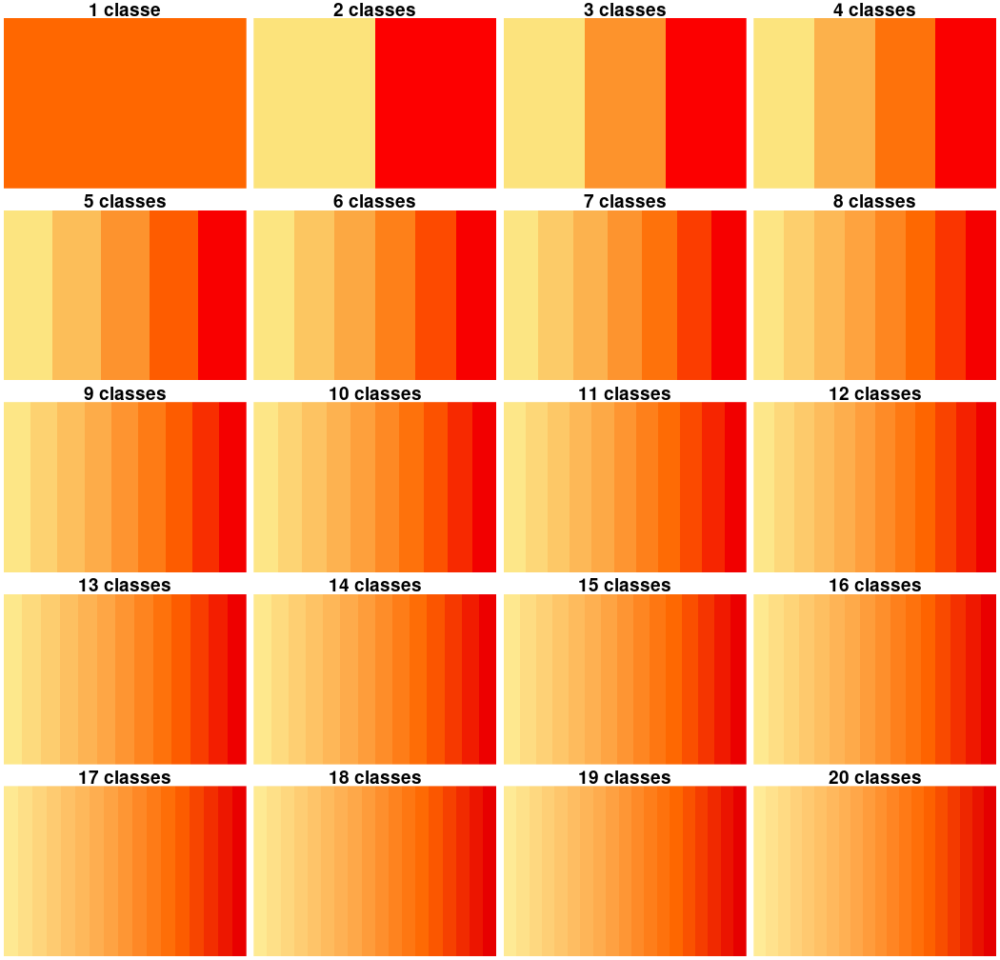
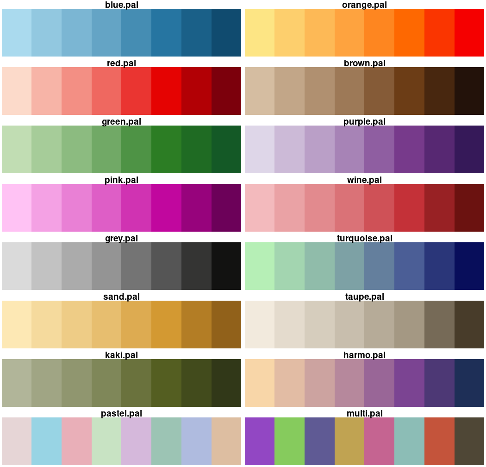
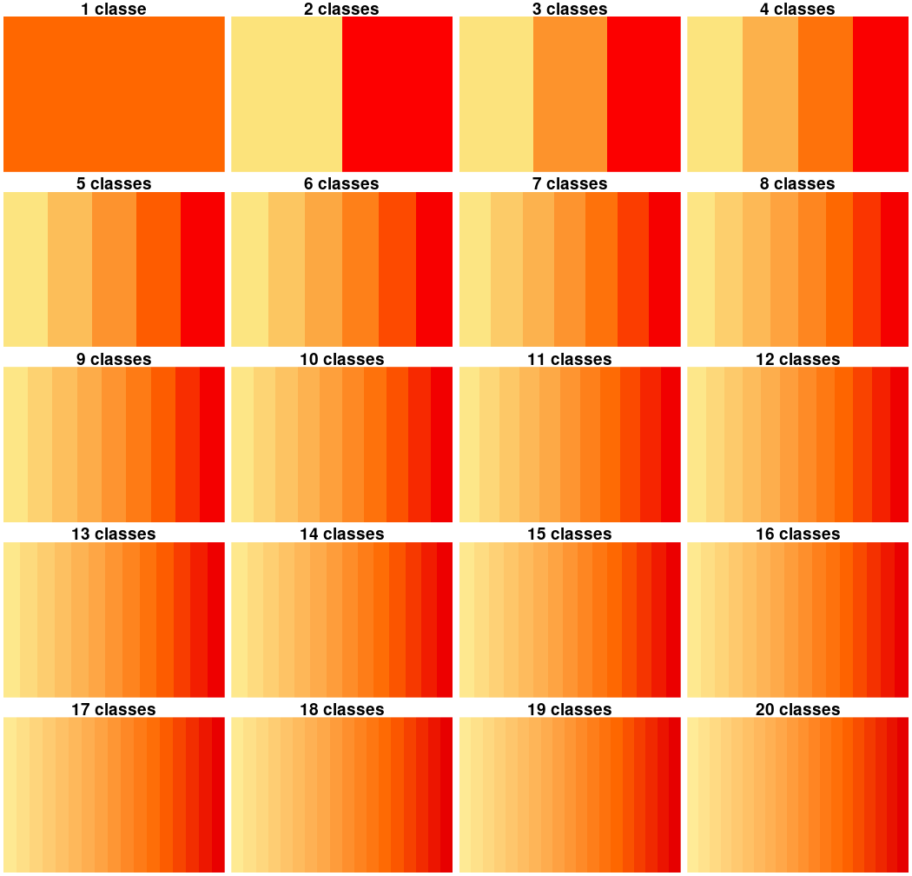
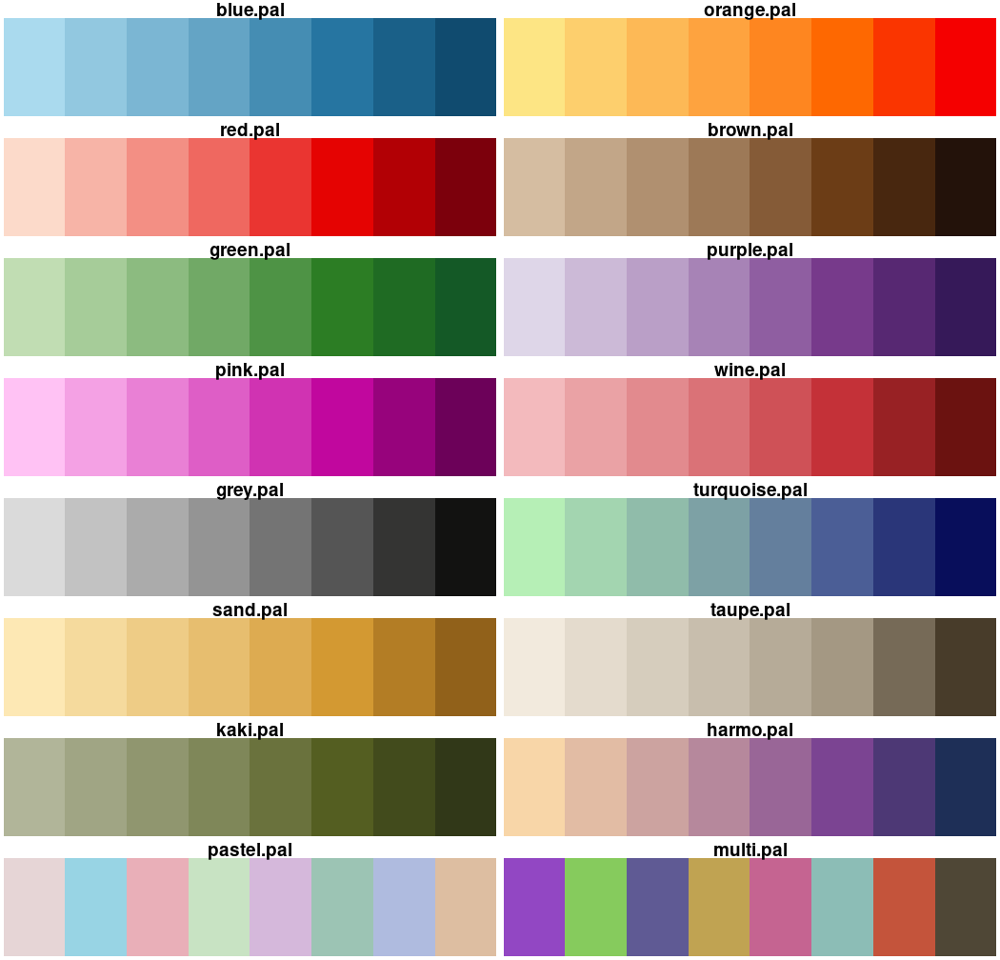

carto.pal builds sequential, diverging and qualitative color palettes.
Diverging color palettes can be dissymmetric (different number of colors in
each of the two gradients).
carto.pal.info displays the names of all color palettes.
display.carto.pal displays one color palette.
display.carto.all displays all the available color palettes.
carto.pal(
pal1,
n1,
pal2 = NULL,
n2 = NULL,
middle = FALSE,
transparency = FALSE
)
carto.pal.info()
display.carto.pal(name)
display.carto.all(n = 10)Arguments
- pal1
name of the color gradient (see Details).
- n1
number of colors (up to 20).
- pal2
name of the color gradient (see Details).
- n2
number of colors (up to 20).
- middle
a logical value. If TRUE, a neutral color ("#F6F6F6", light grey) between two gradients is added.
- transparency
a logical value. If TRUE, contrasts are enhanced by adding an opacity variation.
- name
name of the palette available in the package (see Details).
- n
number of colors in the gradient (up to 20).
Value
carto.pal returns a vector of colors.
carto.pal.info returns a vector of color palettes names.
Details
Sequential palettes: "blue.pal", "orange.pal", "red.pal",
"brown.pal", "green.pal", "purple.pal", "pink.pal", "wine.pal", "grey.pal",
"turquoise.pal", "sand.pal", "taupe.pal", "kaki.pal" or "harmo.pal".
Qualitative palettes: "pastel.pal" or "multi.pal".
References
Qualitative palettes were generated with "i want hue" (https://medialab.github.io/iwanthue/) by Mathieu Jacomy at the Sciences-Po Medialab.
Examples
# Simple gradient: blue
carto.pal(pal1 = "blue.pal" ,n1 = 20)
#> [1] "#DCF0F8" "#D0E8F2" "#C4E0EC" "#B9D8E7" "#ADD0E1" "#A1C8DC" "#96C0D6"
#> [8] "#8AB8D0" "#7EB0CB" "#6EA6C3" "#5F9BBC" "#4F91B4" "#4086AD" "#307BA5"
#> [15] "#236F9A" "#1E6085" "#19506F" "#14405A" "#0F3045" "#0B2130"
# Double gradient: blue & red
carto.pal(pal1 = "blue.pal", n1 = 10, pal2 = "red.pal", n2 = 10)
#> [1] "#0F4464" "#17577C" "#206A94" "#317DA7" "#4B90B5" "#64A3C4" "#79B3CF"
#> [8] "#8CC1DA" "#9FCFE5" "#B2DEF0" "#FCDACA" "#F8BCAE" "#F59F93" "#F28278"
#> [15] "#EE625B" "#EA3B36" "#E71312" "#D00002" "#A60007" "#7C000C"
# Adding a neutral color
carto.pal(pal1 = "blue.pal", n1 = 10, pal2 = "red.pal", n2 = 10, middle = TRUE)
#> [1] "#0F4464" "#17577C" "#206A94" "#317DA7" "#4B90B5" "#64A3C4"
#> [7] "#79B3CF" "#8CC1DA" "#9FCFE5" "#B2DEF0" "#F6F6F6FF" "#FCDACA"
#> [13] "#F8BCAE" "#F59F93" "#F28278" "#EE625B" "#EA3B36" "#E71312"
#> [19] "#D00002" "#A60007" "#7C000C"
# Enhancing contrasts with transparency
carto.pal(pal1="blue.pal", n1 = 10, pal2 = "red.pal", n2 = 10, middle = TRUE,
transparency = TRUE)
#> [1] "#0F4464" "#17577Ce8" "#206A94d2" "#317DA7bb" "#4B90B5a5" "#64A3C48e"
#> [7] "#79B3CF78" "#8CC1DA61" "#9FCFE54b" "#B2DEF034" "#F6F6F61e" "#FCDACA34"
#> [13] "#F8BCAE4b" "#F59F9361" "#F2827878" "#EE625B8e" "#EA3B36a5" "#E71312bb"
#> [19] "#D00002d2" "#A60007e8" "#7C000C"
# The double gradient can be asymetric
carto.pal(pal1 = "blue.pal", n1 = 5, pal2 = "red.pal", n2 = 15, middle = TRUE,
transparency = TRUE)
#> [1] "#8FBFD769" "#9DC9DE5a" "#ABD3E54b" "#B9DDEC3c" "#C7E7F42d" "#F6F6F61e"
#> [7] "#FCDACA2d" "#F9C7B83c" "#F7B4A74b" "#F5A1955a" "#F38F8469" "#F17C7378"
#> [13] "#EF686087" "#EC4E4996" "#EA3531a5" "#E71C1Ab4" "#E50302c3" "#CD0002d2"
#> [19] "#B20005e1" "#970008f0" "#7C000C"
# Build and display a palette
mypal <- carto.pal(pal1 = "blue.pal", n1 = 5, pal2 = "red.pal", n2 = 15,
middle = TRUE, transparency = TRUE)
k <- length(mypal)
image(1:k, 1, as.matrix(1:k), col =mypal, xlab = paste(k," classes",sep=""),
ylab = "", xaxt = "n", yaxt = "n",bty = "n")
 carto.pal.info()
#> [1] "blue.pal" "orange.pal" "red.pal" "brown.pal"
#> [5] "green.pal" "purple.pal" "pink.pal" "wine.pal"
#> [9] "grey.pal" "turquoise.pal" "sand.pal" "taupe.pal"
#> [13] "kaki.pal" "harmo.pal" "pastel.pal" "multi.pal"
display.carto.pal("orange.pal")

display.carto.all(8)

carto.pal.info()
#> [1] "blue.pal" "orange.pal" "red.pal" "brown.pal"
#> [5] "green.pal" "purple.pal" "pink.pal" "wine.pal"
#> [9] "grey.pal" "turquoise.pal" "sand.pal" "taupe.pal"
#> [13] "kaki.pal" "harmo.pal" "pastel.pal" "multi.pal"
display.carto.pal("orange.pal")

display.carto.all(8)
